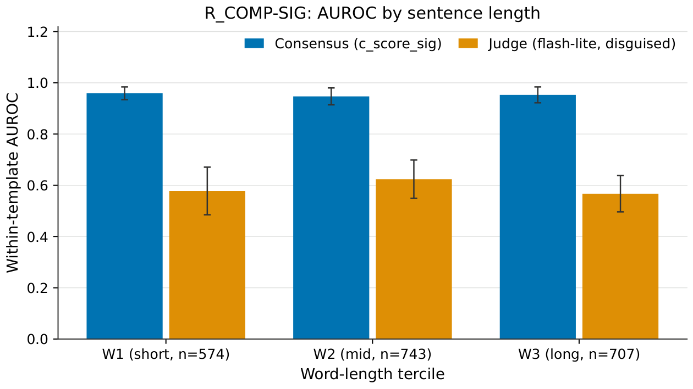

Cross-Family Solver Consensus as a Gold-Free Faithfulness Metric for NL-to-FOL Translation
Contributions
Shared-signature ceiling
Pre-registered evaluation on 221 long-exception sentences: consensus AUROC 0.954 versus 0.587 for a disguised judge (Δ = +0.367), flat across word-length terciles, with zero error endorsement.
Free-vocabulary signal
On development set E (2,686 items), consensus outperforms judges by Δ = +0.099 on stratified AUROC. Aligner-free consensus (c_exact) reaches 0.689 without any predicate mapping.
Out-of-sample transfer
On untouched R_COMP FREE sentences under provisional labels: Δ = +0.171 versus the original-view judge; consensus reaches 0.94 of the frontier judge's AUROC.
Rename tradeoff
A 76.5% false-alarm rate under nonce predicate renames that no variant could eliminate without sacrificing error recall, identifying a fundamental limit of free-vocabulary consensus.
Method
Consensus scoring
Given a sentence and a candidate FOL translation, collect peer translations from k independent LLM families (Gemini, Claude, GPT, Llama, Qwen, Phi, Mistral). The consensus score is:
c_score(c, s) = 1 − (1/k) Σ 1[equiv(c, pi)]
Under shared signature, all translators use a supplied predicate vocabulary and equiv is a direct Z3 check. Under free vocabulary, each translator chooses its own predicate names and equiv requires a predicate-name aligner before the Z3 check.
Predicate alignment
The aligner combines three cost components: structural cost (polarity profile, argument-count match, nesting depth), text-anchor cost (overlap between predicate-name words and source-sentence tokens via Porter stemming and WordNet), and semantic signature (truth-value profiles over random finite interpretations). The k cheapest bijections are evaluated, and the pair is declared equivalent if any bijection yields Z3-verified equivalence.
Score variants
c_exact: no alignment, exact-match only. c_nf (name-free): structural and semantic signatures only, ignoring text anchoring. p_peer_text: logistic fusion of consensus features with text-side features.
Evaluation framework
Shared-signature labels come from Z3 equivalence to trusted-by-construction references. Free-vocabulary labels on set E come from a three-person expert panel. The primary metric is stratified AUROC: items are paired only within the same source stratum. Confidence intervals use sentence-cluster percentile bootstrap (B = 2,000).
Results
(shared signature)
(free vocabulary, dev)
(free vocabulary, dev)
Shared-signature results (R_COMP-SIG)
Table 1: Within-template AUROC on R_COMP-SIG (221 sentences, pure Z3 labels).
| Metric | n | AUROC [95% CI] | Δ vs disg. judge |
|---|---|---|---|
c_score_sig | 1904 | 0.954 [0.939, 0.968] | +0.367 [+0.328, +0.404] |
c_score_align | 1904 | 0.954 [0.939, 0.968] | +0.367 [+0.328, +0.404] |
| Judge (flash-lite, disg.) | 1904 | 0.587 [0.551, 0.622] | — |
| Judge (flash-lite, orig.) | 1932 | 0.673 [0.637, 0.708] | |
| Judge (frontier, orig.) | 60 | 0.932 [0.782, 1.000] | |
| Judge (local, disg.) | 2024 | 0.498 [0.459, 0.534] |
Error endorsement is zero (e = 0): no error item scores below the decision threshold. Among the 429 error items, 75.3% receive the maximum consensus score of 1.0.
Flat with sentence length. Consensus under shared signature is flat across word-length terciles:
Table 2: R_COMP-SIG within-template AUROC by word-length tercile.
| Tercile | n | ERR/COR | c_sig | Judge (disg.) | Δ [CI] |
|---|---|---|---|---|---|
| W1 (shortest) | 574 | 125/449 | 0.959 | 0.578 | +0.382 [+0.278, +0.472] |
| W2 | 743 | 149/594 | 0.947 | 0.624 | +0.331 [+0.253, +0.421] |
| W3 (longest) | 707 | 155/552 | 0.953 | 0.567 | +0.388 [+0.301, +0.471] |
On a 60-row stratified subsample scored by the frontier judge (Gemini 3.1 Pro), consensus achieves pooled AUROC 0.956 [0.889, 1.000] versus 0.932 [0.855, 0.990].
Free-vocabulary development results (set E)
Table 3: Stratified AUROC on development set E (R_AB, free vocabulary, n = 2,686).
| Metric | Strat AUROC [95% CI] | $/item |
|---|---|---|
c_score_align | 0.741 [0.705, 0.775] | 9.1e-5 |
p_peer_text (fused) | 0.753 [0.720, 0.784] | 9.1e-5 |
c_exact (no alignment) | 0.689 [0.652, 0.726] | — |
c_nf (name-free) | 0.686 [0.647, 0.720] | — |
| Flash-lite judge (disg.) | 0.642 [0.607, 0.676] | 5.1e-5 |
| Flash-lite judge (orig.) | 0.623 [0.593, 0.651] | 5.1e-5 |
| Nano judge (disg.) | 0.644 [0.609, 0.680] | 2.0e-5 |
| Local judge Qwen-8B (disg.) | 0.674 [0.646, 0.703] | — |
| Round-trip NLI (min) | 0.606 [0.569, 0.645] | 2.8e-5 |
| Self-consistency (5-sample) | 0.598 [0.559, 0.637] | 6.7e-5 |
| 28-feature stack | 0.735 [0.699, 0.766] | — |
28-feature stack + c_score_align | 0.774 [0.743, 0.802] | — |
Consensus outperforms the disguised flash-lite judge by Δ = +0.099 [+0.049, +0.146] on R_AB and by Δ = +0.116 [+0.070, +0.163] on the long-sentence pool. Adding c_score_align to the 28-feature stack increases stratified AUROC by +0.039 [+0.021, +0.057]; permutation null test p95 = 0.009.
The drop from 0.952 (shared signature) to 0.801 (free vocabulary, same R_COMP sentences) reflects the cost of predicate-name alignment. Aligner-free consensus (c_exact) at 0.689 shows the aligner adds about 22% of the above-chance signal, with the remaining 78% from structural agreement alone.
On L25 sentences alone, Δ = +0.069 [−0.020, +0.148], not significant at 95%. Frontier judge comparison on 284 rows: ratio 0.957 [0.887, 1.034]. System-level Kendall τb = 0.692 [+0.513, +0.795] across 13 configurations.
Free-vocabulary out-of-sample (R_COMP FREE)
Table 4: R_COMP FREE provisional AUROCs (within-template, untouched). Labels are non-confirmatory.
| View | n (ERR/MAPPED) | c_align | Judge |
|---|---|---|---|
| Disguised | 1706 (602/1104) | 0.801 [0.770, 0.834] | 0.584 [0.550, 0.618] |
| Original | 1709 (605/1104) | 0.804 [0.774, 0.836] | 0.633 [0.601, 0.666] |
Disguised-judge Δ = +0.217 [+0.175, +0.260]; original-view Δ = +0.171 [+0.135, +0.206]. Two-auditor subset (146 rows): Δ = +0.105 [+0.011, +0.215]. Frontier-judge subsample (150 rows): ratio 0.940 [0.825, 1.056].
Mechanism
The consensus signal decomposes into endorsement e (ERROR items endorsed by peers) and divergence d (CORRECT items flagged). On R_COMP-SIG: e = 0.0, d = 0.260. Under free vocabulary on set E, net degradation from short to long sentences is Δ(e+d) = +0.356 [+0.198, +0.493], driven by divergence (Δd = +0.608, Δe = −0.252).
Family sufficiency. Three peer families suffice for 97% of full-pool AUROC (k95 = 3); long sentences require k95 = 5.
Table 5: Free-vocabulary AUROC by number of peer families on set E.
| k | AUROC (overall) | AUROC (long, T3) |
|---|---|---|
| 1 | 0.685 | 0.581 |
| 3 | 0.757 | 0.651 |
| 5 | 0.776 | 0.698 |
| 7 | 0.784 | 0.726 |
Confirmation status
Independent confirmation remains incomplete. On the one testable stratum (DT), consensus achieves 0.916, tying Qwen-8B (Δ = +0.003). On L25, c_score_align falls to 0.443 on 42 items (35 ERROR / 7 CORRECT) with extreme variance. Every pre-registered criterion returned NOT_TESTABLE or unfavourable.
The rename tradeoff
Table 6: False-alarm rates on meaning-preserving renames of CORRECT candidates.
| Metric | NONCE FA | NONCE flip | SYN FA | SYN flip |
|---|---|---|---|---|
c_align | 0.765 | 0.605 | 0.565 | 0.313 |
c_nf (name-free) | 0.132 | 0.000 | 0.201 | 0.000 |
p_peer_text | 1.000 | 0.821 | 0.216 | 0.080 |
| Judge (disg.) | 0.229 | 0.134 | 0.085 | 0.058 |
The name-free c_nf eliminates rename sensitivity (flip = 0) at the cost of blindness to meaning-rename errors (AUROC 0.499, chance) and lower overall discrimination (0.686 vs. 0.741).
Dead ends
Abandoned alternatives: fused structural-feature filter (gate failure); name-free consensus (rename-invariant but blind); solver-based semantic reader (balanced accuracy 0.476); LLM adjudication (0.662); candidate-signature consensus (error endorsement rose to 0.459).
Figures

Click to enlarge

Click to enlarge

Click to enlarge

Click to enlarge
Limitations
- Shared-signature scope. The 0.954 AUROC uses templated sentences with a supplied predicate vocabulary, limiting scope to controlled settings.
- Development data overlap. R_COMP-SIG later served as development data for aligner tuning. The pre-registration keeps the SIG result uncontaminated, but set E numbers are not independent.
- Rename vulnerability. Under free vocabulary, 76.5% false-alarm rate on nonce renames systematically penalises non-standard predicate names.
- Length degradation. Consensus degrades with sentence length under free vocabulary (NET +0.356), weakest on the longest, most complex sentences.
- Provisional labels. R_COMP FREE uses non-confirmatory labels; the two-auditor subset (Δ = +0.105) barely excludes zero.
- Label dependence. Development results depend on a three-person panel whose agreement is imperfect.
- Cost. At k = 9, the amortised consensus cost per candidate is about 19 times the cost of a single cheap judge call.
- Domain. All results are on English-to-FOL from MALLS, ProverQA, and R_COMP. Generalisation is untested.
Code artifacts
All evaluation code is released. Each link points to the experiment or dataset that produced the corresponding result.